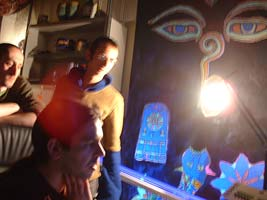
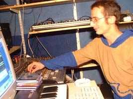
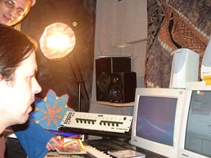
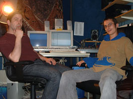
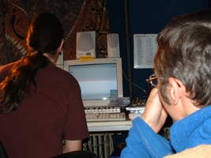

| PSYCHONAUT AND THE MUSHROOM-MAGIZINE |

|



Rakete: Zuerst solltet ihr euch mal vorstellen, ihr seid zu zweit. Ist das richtig?
Lothar: Psychonaut besteht aus zwei Leuten, Oli und meiner Wenigkeit. Wir kommen aus München, leben in München und sterben hoffentlich nicht in München. Wir kennen uns schon seit ca. 20 Jahren.
Oli: Wir haben beide grade die 30 überschritten, im "real life" ist Lothar Computerspezialist und ich arbeite als Altenpfleger.
Rakete: Wir seid ihr zur Musik gekommen?
Oli: Irgendwann, Anfang der 80er kam der Drang, sich kreativ mit Tönen und Geräuschen zu betätigen... Die ersten Experimente sammelten wir mit einem Doppeltapedeck und einem Mikrophon. womit wir alle möglichen Geräusche und Klänge von Kochtöpfen, Werkzeugen und diversen anderen Utensilien aufnahmen und eben so herumspielten und experimentierten und unseren Eltern damit auf die Nerven gingen.
Lothar: Wir sind auch stark vom Wave oder Underground der 80er Jahren beeinflußt, Oli mehr auf der elektronischen Schiene und ich mochte eigentlich hauptsächlich gitarrenlastige Musik, ziemlich unterschiedlich, aber mit Bands wie Einstürzende Neubauten, Depeche Mode, Sisters of Mercy konnten wir beide was anfangen....
Oli: Wir haben dann für eine kurze Zeit angefangen aufzulegen, beispielsweise im "Größenwahn" in München.
Lothar: Unser erster Sequenzer lief auf einem Commodore C 64, wir hatten einen Synthi, eine Drum Machine und ein billiges Effektgerät.
Oli: Anfang der 90er Jahre sind wir dann auf die ersten Technoparties gegangen, was uns ziemlich beeindruckt hat. Wir haben dann angefangen, auch unseren Sound in die Richtung zu entwickeln.
Lothar: Das waren endlose Nächte mit unzähligen Kippen und literweise Kaffee in einem winzigen 10 qm Appartment, wo wir eben herumexperimentiert haben.
Oli: Das war sozusagen unsere "Lehrzeit", wo wir uns langsam über die Jahre das technische Know-how und die Grundlagen angeeignet haben.

Rakete: Wie kam es zu Psychonaut und seit wann gibt es euch?
Oli: Vor ca. sechs Jahren sind wir zufällig auf einer Goa- Party gelandet und hatten sofort das Gefühl: Wow, das ist es, wir sind angekommen... Wir haben dann auch angefangen unseren Sound zu verändern, was ein Prozess von ca. zwei Jahren war, bis wir schließlich mit dem Ergebnis soweit zufrieden waren.
Lothar: Ich denke, im Grunde hat sich das von selbst entwickelt, es war einfach die Musik, die wir am meisten liebten. Irgendwann kam dann die Idee, das ganze "Psychonaut" zu nennen and the rest is history....
Rakete: Habt ihr noch andere Projekte am Laufen?
Lothar: Nach dem ersten Album haben wir Shiva-Jörg von Shiva Space Technology kennen gelernt und haben uns dann auch ein paar Mal im Studio getroffen.
Oli: Dabei sind unter dem Namen "Shivanauten" ein paar Tracks entstanden, von denen einer bei Shiva Space veröffentlicht wurde.
Rakete: Wie seid ihr zu Novatekk gekommen?
Oli: Das erste Album war eigentlich nur eine Zusammenstellung der besten bis dahin produzierten Tracks.
Lothar: Wir dachten, es würden von dieser vielleicht ein oder zwei Tracks veröffentlicht werden. Wir haben unser Demo an verschiedene Labels verschickt, einfach mal, um zu testen, ob was zurückkommt. Zu dieser Zeit hatten wir noch relativ wenig Kontakt zur "Szene". Wir sind zwar feiern gegangen, waren aber ansonsten die meiste Zeit am Produzieren und im Studio.
Oli: Kurze Zeit nach der Versandaktion haben sich einige Labels gleichzeitig gemeldet und wollten das Ganze sofort, so wie es war, als Album rausbringen. Was uns erstmal in Entscheidungszwang gebracht hat. Novatekk hat uns einfach das beste Angebot gemacht. Da Novatekk die Option aufs zweite Album hatte, ist "Antagonistic Pathways" jetzt auch dort erschienen, obwohl wir nicht exklusiv bei Novatekk unter Vertrag stehen. Leider kommt "Antagonistic Pathways" nicht auf Vinyl raus, was wir persönlich sehr schade finden.

Rakete: Musikalisch halte ich euer neues Album für wesentlich stimmungs-umfangreicher als "Vol 1", das mir im Gesamten düsterer erschien. Es liegen auch ca. 2 Jahre dazwischen. Was hat sich bei euch in letzter Zeit getan?
Oli: Wir haben nach dem ersten Album angefangen, Liveacts zu machen, was für uns eine völlig neue und wichtige Erfahrung war, wenn man so in direkter Interaktion mit den Leuten steht und unmittelbar das Feedback auf den eigenen Sound zu spüren bekommt. Wenn man beobachten kann, wie die Leute auf den eigenen Sound abgehen und sich darin verlieren (finden?) ist das einfach das schönste Geschenk, das man für die lange Zeit des Produzierens bekommen kann und das ist eigentlich auch der Grund, wofür wir das Ganze machen.
Lothar: Wir haben zwar schon einige Liveacts hinter uns, würden uns aber wünschen, dass da noch mehr kommt, beispielsweise auch aus dem Ausland, wo wir zwar schon einige Anfragen hatten, aber bisher noch nicht wirklich was zustande gekommen ist. Letzten Herbst haben wir beispielsweise in Litauen (Ragana) gespielt, wobei wir den Veranstaltern für dieses Jahr mehr Glück wünschen.
Oli: Ansonsten kamen letzten Winter/Frühling einige Liveacts in verschiedenen deutschen Clubs zustande, unter anderem im Rahmen der ”Wüste Welle Radiotour” mit Dirty Frank und Mario Nier (Dragonmaster) .
Lothar: Durch die Liveacts konnten wir auch die Tracks für das neue Album direkt und in unterschiedlicher Umgebung testen. Insgesamt kann man hinsichtlich der Stimmungsunterschiede zwischen den beiden Alben sagen, dass auch wir uns in den letzten Jahren verändert und weiterentwickelt haben und dass eben auch im Sound zum Ausdruck kommt. Die Stimmungen der Tracks kann man so und so schlecht beeinflussen, es kommt, wie es kommt, es sind immer spontane Stimmungen, wenn man einen neuen Track anfängt. Der Grundgedanke bei dem Album war allerdings schon da, mehr Abwechslung reinzubringen.
Oli: Es war beim neuen Album auch geplant, emotional abwechslungsreicher zu produzieren und eine größere Spannbreite zu entwickeln, um unterschiedliche Leute zu erreichen. Wir versuchen, mit unserem Sound Geschichten zu erzählen, um die Leute zu verschicken.

Rakete: Woher bekommt ihr eure Inspiration?
Oli: Im Großen und Ganzen ist das Leben selbst die Inspiration.
Lothar: Erstmal wird man wohl beeinflusst durch alle mögliche Musik, die einem persönlich am besten gefällt, auch weitab von Trance oder elektronischer Musik.
Oli: Insgesamt ist für uns auch der Austausch und der Kontakt mit anderen Musikern und DJs ziemlich inspirierend, weil man dadurch neue Inputs bekommt.
Rakete: Ihr steht bei Spiralbooking auf der Liste, erzählt mal!
Lothar: Eigentlich wird uns langsam das ganze Drumherum zu viel, weil wir immer weniger dazu kommen, Musik zu machen, was wir ja eigentlich wollen. Daher sind wir ganz froh, dass Spiralbooking als junge, engagierte Bookingagentur auf uns zugekommen ist und uns einen Teil der Arbeit abnimmt, also Terminkoordination, Verhandlungen mit Veranstaltern und Labels.
Oli: Da Spiralbooking auch in München ansässig ist, war es naheliegend, zusammen zu arbeiten. Der Kontakt kam über Dj Oli Haus 19/ S.h.e.e.p. zustande und bisher sind wir sehr zufrieden und werden wohl die Zusammenarbeit noch intensivieren.
Rakete: Was passiert in nächster Zeit und was habt ihr euch vorgenommen?
Oli: Wir arbeiten daran, unseren Style weiterzuentwickeln und zu verändern, also einfach mal Neues zu probieren und ausgelatschte Pfade zu verlassen.
Lothar: In den letzten Wochen haben wir ein paar Tracks produziert, die eher in die Richtung "Morningsound" gehen, mit mehr melodischen Elementen und etwas softer und grooviger als man das bisher von Psychonaut gewöhnt ist. Wir stehen momentan in Verhandlungen mit verschiedenen Labels... Aber über ungelegte Eier soll man ja bekanntlich nicht sprechen...
Für die Zukunft stellen wir uns vor, mit verschiedenen Labels zusammenzuarbeiten und eventuell mit unterschiedlichen Künstlern/Musikern und DJs ins Studio zu gehen, um unseren eigenen Horizont zu erweitern und über die eigenen Grenzen hinauszugehen.
Oli: Demnächst gehen wir mit Dirty Frank (Radio Wüste Welle Tübingen) ins Studio um für sein geplantes neues Label Pura Vita Recordings exklusiv was zu producen.
Lothar: Außerdem arbeiten wir ständig daran, die Liveacts noch auszubauen und zu optimieren, da kann man noch einiges machen auch gerade in Richtung Visualisierung, Projektionen usw.

Rakete: Noch irgendwas, was ihr schon immer los werden wolltet?
Lothar: Ich denke, große Teile der Musikbranche stecken derzeit in dem Dilemma, dass wenig Risiken eingegangen werden, das heißt häufig steht nur der Verkauf im Vordergrund. Dadurch ist vieles mittlerweile einfach austauschbar geworden.
Oli: Dadurch hat man allerdings auch die Möglichkeit, sich leichter von den zahlreichen Einheitsproduktionen abzuheben, auch wenn man dadurch das Risiko eingeht, eben nicht die breite Masse anzusprechen. Unser Motto ist: No risk no fun, gib alles!
|
| © 2001-2002 by Hardboiled records |